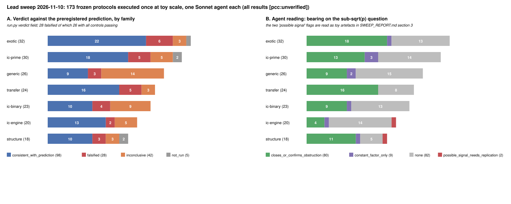

What this is. The owner asked to run every lead of
the ECDLP atlas in a parallel Sonnet 5.5 workflow, with the experiments
checked in before they started. This report is the synthesis.
Classification: sweep of single, local, toy-scale runs. No
improvement is claimed, no atlas disposition changes, every number is
[pcc:unverified] (one run, no independent replay,
no validation gate, no isolab).
Provenance. - Lead index: leads.json
(173 ids = the 160 leads of the 2026-11-07 review plus 13 ids that were
merged or renamed between the two in-repo atlas snapshots). The atlas
YAML in crypto-autoresearcher is vaulted
(VLT1) and unreadable in this session; lead fields come
from the verbatim --pursuit dump and table B of
research/prime_field_lead_assessment_20261107/ and the
2026-11-01 tally; next-step text is truncated at ~100 chars in the
source. - Phase 1 (check-in): 173 Sonnet 5.5 agents, four workflow
shards, wrote PROTOCOL.md (+ stdlib run.py
with --smoke) per lead; frozen by
MANIFEST.sha256 (343 files) at commit
f4bc8d406c, merged to main in PR #3849 before
any execution. ~16M tokens, 0 agent errors. - Phase 2 (execution): 173
Sonnet 5.5 agents, two shards, one run per lead under
timeout 660, no retries, no edits to hashed files
(sha256sum -c MANIFEST.sha256 passes after execution).
~14.5M tokens, 0 agent errors. Total run.py wall time 2,796
s (median 4 s, max 221 s). - Per-lead evidence:
<LEAD>/RESULT.md, RESULT.json (the
single JSON object run.py printed),
run.status, run.stderr; structured summaries
in phase2_index.json; raw shard outputs in
phase1_shard*.json, phase2_shard*.json.
| count | |
|---|---|
| leads | 173 |
runnable_local /
desk_only / blocked (Phase 1
classification) |
170 / 1 / 2 |
| ran to completion / timed out (660 s) / crashed / blocked / desk | 167 / 2 / 1 / 2 / 1 |
verdict
consistent_with_prediction |
98 |
verdict falsified (26 with
all controls passing, 2 with a failed control) |
28 |
verdict inconclusive (30 of
them because a null, positive or A/A control failed) |
42 |
not_run (timeout, crash,
blocked) |
5 |
| agent reading: confirms or re-derives a recorded obstruction | 80 |
| agent reading: constant factor only | 9 |
| agent reading: toy does not bear on the √p question | 82 |
| agent reading: possible signal, needs replication | 2 (both read as artefacts in §3) |

A: verdict by family. B: the executing agent’s own reading of
what the toy says about the sub-√p question. Drawn from
phase2_index.json by plot_sweep.py.
Per family (verdict: consistent / falsified / inconclusive / not run): exotic 22/6/3/1 · ic-prime 18/5/5/2 · generic (rho) 9/3/14/0 · transfer 16/5/3/0 · ic-binary 10/4/9/0 · ic-engine 13/2/5/0 · structure 10/3/3/2.
C(B+m−1,m)/N, Coppersmith reach, the
p^{2−2/g} cover floor). That is a consistency check on the
atlas, not new knowledge.RESULT.md: 7 come from
a single marginal cell or a one-count excess at a preregistered
threshold (e.g. TRF-mov-small-embedding-degree: 4 hits vs
3.27 expected; ICB-large-prime-variants: R = 0.784 vs 0.8;
STR-class-representative-ic-selection: 0.0034 above a
20-replicate null max); 9 are finite-size effects that decay or saturate
with p (EXO-lossy-object-propagation,
EXO-gag-holant-semaev-chain,
TRF-second-torsion-direction,
TRF-jv-sieve-fp6-weak-class,
ICP-residual-partial-relations, …); 6 are instrument
defects the agents diagnosed but were forbidden to fix (a reversed
monotonicity test in STR-isogeny-transport-preprocessing, a
mis-specified rank criterion in
ICP-prym-witness-relation-diversity, a weak/heavy-tailed
rho reference in RHO-ecc2k130-gpu-fpga-throughput and
ICP-retained-setup-online, a non-comparable proxy in
ICE-chained-semaev-dreg-vs-semiregular, a
transcript-identity flag in EXO-augmented-oracle-ggm); the
remaining ones are “falsified in the direction of the recorded
obstruction”
(e.g. ICB-learned-cost-model-factor-base-selection: the
ridge ranks in the wrong direction;
STR-endo-scalar-action-generic: more speed-up than 1/√k
against a mis-calibrated baseline). None is a measured gain over any
baseline.Z_N for a curve, n = 3
for n = 5, a filter for Semaev, an op-count formula for a
pipeline). Those rows are coverage, not evidence. The two blocked leads
(ICP-icperf-binary-pdp-solver,
ICE-gpu-rootfind-oracle) need Gröbner builds, GPU or
large-memory hosts; the two timeouts
(ICP-representation-subset-sum,
STR-isogeny-class-generic-invariance) and the crash
(STR-secp256k1-cm-class-audit, no prime-order
j = 0 twist found for one p) are protocol
cost-estimate failures, recorded as such.LEAD-ICE-rootfind-pairtable-oracle —
toy IC/rho ratio R_w(b) falls from 2.2 at 12 bits to 0.82
(w = 0), 0.71 (w = 0.1), 0.45 (w = 1) at 20 bits, slope CIs negative;
preregistered falsifier (R < 1 at both largest sizes) not met,
verdict inconclusive. Reading: 5 replicates per size, a non-monotone
16-bit bump (3.85), a rho reference inflated at small sizes by DP
overhead and restarts (DP bits = bits//2 − 4), and a
pair-table cost that is only 5% of the arm — i.e. the arm’s charged cost
is dominated by n^{1/3}-scaled table work against
n^{1/2} walk work exactly in the regime where the walk’s
constants are worst. This is the pre-asymptotic crossing the program’s
cost model predicts for a free table (S·T² ≈ n, program
note §1), not an exponent. The lead’s own atlas next step (price every
native primitive, second-host replay) is the right test; this toy
neither replaces nor advances it.
LEAD-STR-class-representative-ic-selection
— best-of-K yield gain S_obs = 0.2895 vs null
q99 = 0.2861 (the max of 20 replicates), A/A range reaching
0.2857. Reading: a 1.2% exceedance of a 20-sample maximum (≈ 1-in-21
under the null), in a toy that relabels x ↦ u²x on one
curve and does not measure index-calculus cost. Constant factor at most,
and not established by this run.
Neither flag should move a disposition. Both are recorded here so
that nobody later mistakes the label in phase2_index.json
for a finding.
run.py files are not yet instruments; (ii) the 82 “does not
bear” readings say which leads cannot be touched without their real
engine (Gröbner, GPU, isolab, the vaulted atlas); (iii) the 80
obstruction confirmations are cheap regression tests for the atlas’s
closed and exhausted rows.ICP-digit-presentation-solving-degree,
ICP-pkm-tower-algebraic-oracle,
ICP-coppersmith-smallroot-semaev with a new lattice,
EXO-global-lift-height,
STR-class-group-ecdlp-bridge) all ran as stand-ins here
(and pkm-tower’s positive control failed), and each still
needs the measurement its atlas entry names.ecbench reference
(LEAD-RHO-matched-rho-calibration) before any rho-ratio
claim; 14 inconclusives are instrument noise.experiment-director;
everything else in this sweep is closed-consistent or
stand-in-only.leads.json, phase1_index.json,
phase1_shard{1..4}.json, phase2_index.json,
phase2_shard{A,B}.json, MANIFEST.sha256,
<LEAD>/{PROTOCOL.md,run.py,RESULT.md,RESULT.json,run.status,run.stderr,BLOCKED.md},
plot_sweep.py, render.js,
figures/sweep_outcomes.{svg,png},
SWEEP_REPORT.{md,html,pdf}.